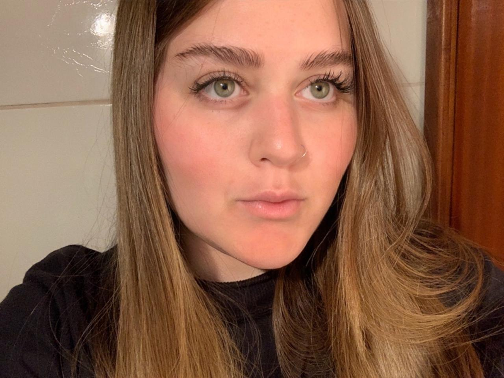

Estudante de Engenharia de Software
Meu nome é Jullia e estou começando a me aprofundar no mundo da tecnologia. Tenho curiosidade em aprender coisas novas e gosto de entender como os sites funcionam por trás. Este portfólio é uma forma de mostrar um pouco do que já venho desenvolvendo e praticando.

Meu nome é Jullia e sou estudante, com grande interesse pela área de tecnologia e pelo aprendizado contínuo. Estou iniciando minha jornada no desenvolvimento web, utilizando HTML e CSS para criar meus primeiros projetos e entender melhor como os sites são construídos.